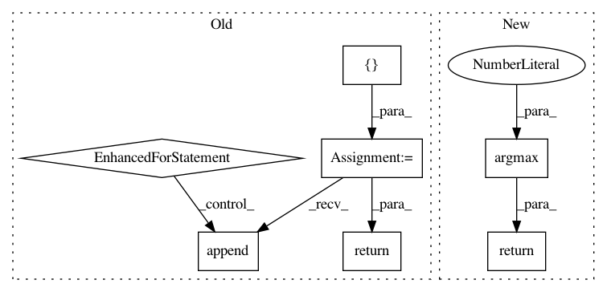

892065c8339f9c20d36127645ba3ae169577f47b,skorch/classifier.py,NeuralNetClassifier,predict,#NeuralNetClassifier#,179
Before Change
y_pred : numpy ndarray
y_preds = []
for yp in self.forward_iter(X, training=False):
yp = yp[0] if isinstance(yp, tuple) else yp
y_preds.append(to_numpy(yp.max(-1)[-1]))
y_pred = np.concatenate(y_preds, 0)
return y_pred
neural_net_binary_clf_doc_start = NeuralNet for binary classification tasks
After Change
y_pred : numpy ndarray
return super().predict_proba(X).argmax(1)
neural_net_binary_clf_doc_start = NeuralNet for binary classification tasks
In pattern: SUPERPATTERN
Frequency: 3
Non-data size: 7
Instances
Project Name: dnouri/skorch
Commit Name: 892065c8339f9c20d36127645ba3ae169577f47b
Time: 2020-06-27
Author: b.bossan@gmail.com
File Name: skorch/classifier.py
Class Name: NeuralNetClassifier
Method Name: predict
Project Name: scikit-multiflow/scikit-multiflow
Commit Name: a8d354aa3f1d796ebfcf41586af1eb925f229ecc
Time: 2020-04-01
Author: 17923265+jacobmontiel@users.noreply.github.com
File Name: src/skmultiflow/lazy/knn_classifier.py
Class Name: KNNClassifier
Method Name: predict
Project Name: Shawn1993/cnn-text-classification-pytorch
Commit Name: 5c177f3d9a29fc7737bd4734315820d1c11c7e87
Time: 2019-07-17
Author: rriva002@ucr.edu
File Name: cnn_text_classification.py
Class Name: CNNClassifier
Method Name: predict